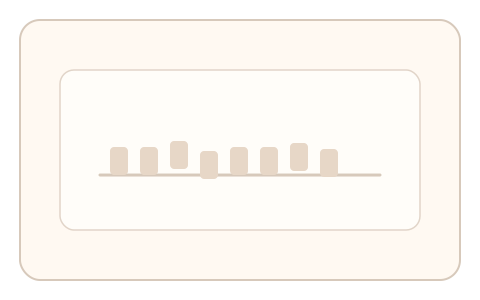
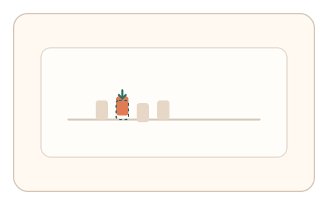
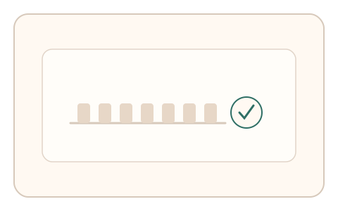

#73
视觉思考范式：文字与符号
已扩展
基线对齐纠偏
在文字基线轻微错位的情况下让用户拖拽纠偏，以纠偏方向与微调节奏验证真实性。
概念原文
一行字中个别字符微错位，用户拖拽恢复“看起来对齐”的基线。记录纠偏方向、幅度与细调次数。
利用人类对基线整齐度的敏感性作为验证信号。
研究背景
排版阅读依赖对基线与对齐的稳定感知，人类对错位极为敏感，会产生可测的纠偏幅度与停顿模式。通过记录纠偏过程，可以捕捉区别于脚本的细粒度行为信号。
核心机制
- 呈现一行文字，部分字符轻微上/下偏移。
- 用户拖拽错位字符恢复“看起来对齐”的基线。
- 记录纠偏方向、幅度与细调次数。
- 多轮随机字体与错位幅度建立稳定分布。
用户流程
- 步骤 1：用户看到带错位字符的文本行。
- 步骤 2：用户拖拽错位字符完成对齐。
- 步骤 3：系统记录纠偏轨迹与节奏并判定。
判定信号
纠偏方向与幅度
人类对基线错位有稳定的纠偏范围。
微调次数与停顿节奏
真实纠偏通常伴随短暂停顿与小幅回调。
判定逻辑
纠偏幅度需落在人类分布区间，且伴随合理微调节奏；一次到位或无回调判异常。
对抗面
- 脚本计算基线并直接对齐
- 重放真实用户的拖拽轨迹
防御与缓解
- 随机化字体、字号与错位幅度
- 引入细微渲染扰动降低参数直接映射
- 叠加拖拽速度与停顿信号进行多信号判定
可达性与风险
提供键盘微调与更大字号模式，对阅读障碍或低视力用户提供替代任务。
- 不同设备渲染导致基线感知差异
- 阅读障碍用户可能出现误拒
可视化状态

状态 1：基线错位
部分字符轻微偏离基线。

状态 2：拖拽纠偏
用户拖拽字符恢复对齐。

状态 3：对齐判定
依据纠偏轨迹与节奏给出判定。
参考资料
Baseline (typography)
说明排版中的基线概念与对齐关系。
Alignment (graphic design)
说明视觉对齐对感知与可读性的影响。